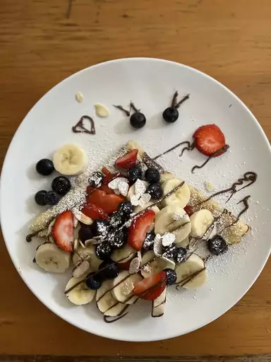

Best Crêpes Recipe

LEts walkthrough The steps to make The best French Crêpes
French crepes are ultra-thin pancakes known for their light,
delicate texture. Made from a simple batter of flour, milk, and eggs,
they are spread thinly over a hot pan until golden and lacy. You can serve them sucrées (sweet) with sugar or
chocolate,
or salées (savory) with cheese and eggs,
making them a versatile staple of French cuisine.
Ingredients List
2 tablespoons butter, melted
Steps
Gather all ingredients.
Sift flour, sugar, and salt into a bowl; set aside. Beat eggs and milk together in a large bowl with an electric mixer.
Beat in flour mixture until smooth; stir in melted butter.
Lightly grease a griddle or frying pan; heat over medium-high heat. Pour or scoop the batter onto the griddle, using approximately 2 tablespoons for each crêpe.
Immediately rotate the skillet to spread batter out in a thin layer. Cook until the top of the crêpe is no longer wet and the bottom has turned light brown, 1 to 2 minutes.
Shake the pan or loosen with a spatula; turn or flip it over and cook until other side has turned light brown, about 1 minute more. Repeat with remaining batter.
Serve with your choice of fillings or toppings, and enjoy!
Go back